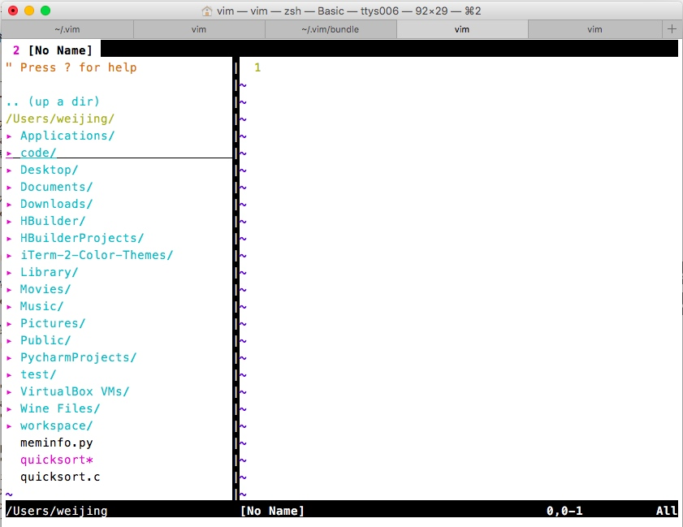

打造属于自己的vim利器
毋庸置疑vim很强大，然而没有插件的话对于大多数人来说他的界面是很不友好的。下面简单写一下我对vim的配置

这是我的vim配置，装的插件不是很多，对我来说已经够用。左边的侧边栏是NERD插件提供的，还装了youcompleteme做代码补全用，其他的就是对vimrc的配置了。
插件都是使用bundle来管理的，在安装前需要在~下新建.vim/{plugin,doc,bundle}
1、安装vundle
git clone https://github.com/gmarik/vundle.git ~/.vim/bundle/vundle
2、在vimrc文件中输入如下配置，然后打开vim，运行 :PluginInstall，如果安装成功，你将看到Done!的提示字样。
3、YCM语法补全模块的编译
不同于很多vim插件，YCM首先需要编译，另外还需要有配置。在vim启动后，YCM会找寻当前路径以及上层路径的.ycm_extra_conf.py.在~/.vim/bundle/YouCompleteMe/cpp/ycm/.ycm_extra_conf.py中提供了默认的模板
cd ~/.vim/bundle cd YouCompleteMe git clone https://github.com/Valloric/YouCompleteMe.git git submodule update --init --recursive ./install.py --clang-completer
4、然后应该可以使用了
若想打造Python的IDE可以移步[这里]http://unlogic.co.uk/2013/02/08/vim-as-a-python-ide/
附：.vimrc
"-------------------------------------------------------------------------- " Bundle "-------------------------------------------------------------------------- "启用Vim的特性，而不是Vi的（必须放到配置的最前边） set nocompatible filetype off " required " set the runtime path to include Vundle and initialize set rtp+=~/.vim/bundle/Vundle.vim call vundle#begin() " alternatively, pass a path where Vundle should install plugins "call vundle#begin('~/some/path/here') " let Vundle manage Vundle, required Plugin 'scrooloose/nerdtree' nnoremap <F2> :NERDTreeToggle<CR>Plugin 'VundleVim/Vundle.vim' " The following are examples of different formats supported. " Keep Plugin commands between vundle#begin/end. " plugin on GitHub repo Plugin 'tpope/vim-fugitive' " plugin from http://vim-scripts.org/vim/scripts.html Plugin 'L9' " Git plugin not hosted on GitHub Plugin 'git://git.wincent.com/command-t.git' " The sparkup vim script is in a subdirectory of this repo called vim. " Pass the path to set the runtimepath properly. Plugin 'rstacruz/sparkup', {'rtp': 'vim/'} " Install L9 and avoid a Naming conflict if you've already installed a " different version somewhere else. Plugin 'ascenator/L9', {'name': 'newL9'} " All of your Plugins must be added before the following line call vundle#end() " required filetype plugin indent on " required " To ignore plugin indent changes, instead use: "filetype plugin on " " Brief help " :PluginList - lists configured plugins " :PluginInstall - installs plugins; append `!` to update or just :PluginUpdate " :PluginSearch foo - searches for foo; append `!` to refresh local cache " :PluginClean - confirms removal of unused plugins; append `!` to auto-approve removal " " see :h vundle for more details or wiki for FAQ " Put your non-Plugin stuff after this line "autocmd vimenter * NERDTree " 设置NerdTree（侧边栏） map <F3> :NERDTreeMirror<CR> map <F3> :NERDTreeToggle<CR> " 关闭文件时同时关闭文件浏览器 let NERDTreeQuitOnOpen = 1 "当打开vim且没有文件时自动打开NERDTree autocmd vimenter * if !argc() | NERDTree | endif " 只剩 NERDTree时自动关闭 autocmd bufenter * if (winnr("$") == 1 && exists("b:NERDTreeType") && b:NERDTreeType == "primary") | q | endif "-------------------------------------------------------------------------- " 基本设置 "-------------------------------------------------------------------------- " When started as "evim", evim.vim will already have done these settings. if v:progname =~? "evim" finish endif " 设置编码 set encoding=utf-8 set fenc=utf-8 set fileencodings=ucs-bom,utf-8,cp936,gb2312,gb18030,big5 "显示行号 set number "设置背景色 "set bg=dark "用 koehler 调色板 "colorscheme koehler colorscheme desert "隐藏工具栏和滑动条 set guioptions=aAce "总是在窗口右下角显示光标的位置 set ruler "设置标签栏 "最多30个标签 set tabpagemax=30 "显示标签栏 set showtabline=2 " 启用鼠标 if has('mouse') set mouse=v endif "设置语法高亮 if &t_Co > 2 || has("gui_running") syntax on endif " 输入文本时隐藏鼠标 set mousehide "-------------------------------------------------------------------------- " 搜索设置 "-------------------------------------------------------------------------- "打开搜索高亮 set hlsearch "忽略大小写 set ignorecase "在查找时输入字符过程中就高亮显示匹配点。然后回车跳到该匹配点。 set incsearch "设置查找到文件尾部后折返开头或查找到开头后折返尾部。 set wrapscan